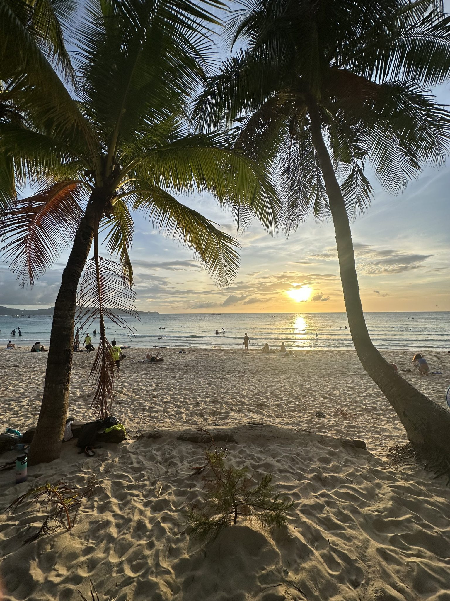
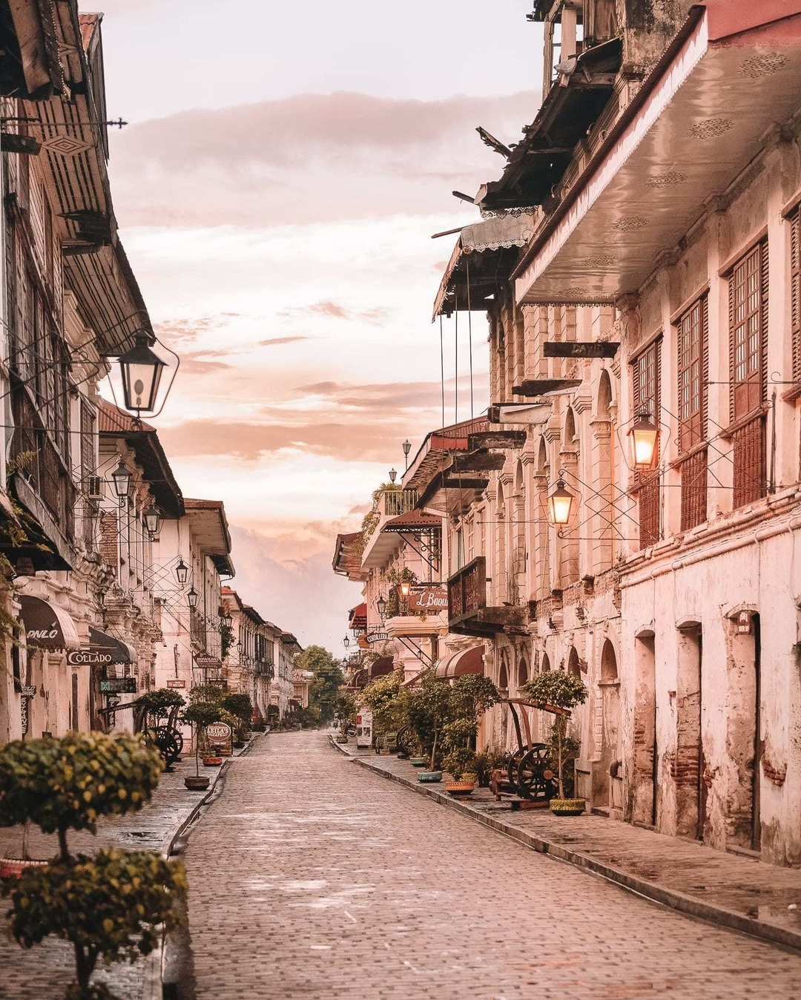

Mayon Volcano
Symmetrical Mayon, which rises above the Albay Gulf NW of Legazpi City, is the most active volcano of the Philippines, read article

Boracay Beach
Boracay is a small island located in the Western Visayas that boasts beautiful beaches and and arguably the best night life in the country, read article

Vigan City
Vigan City, known for being a well-preserved Spanish colonial town, is a UNESCO World Heritage Site, read article